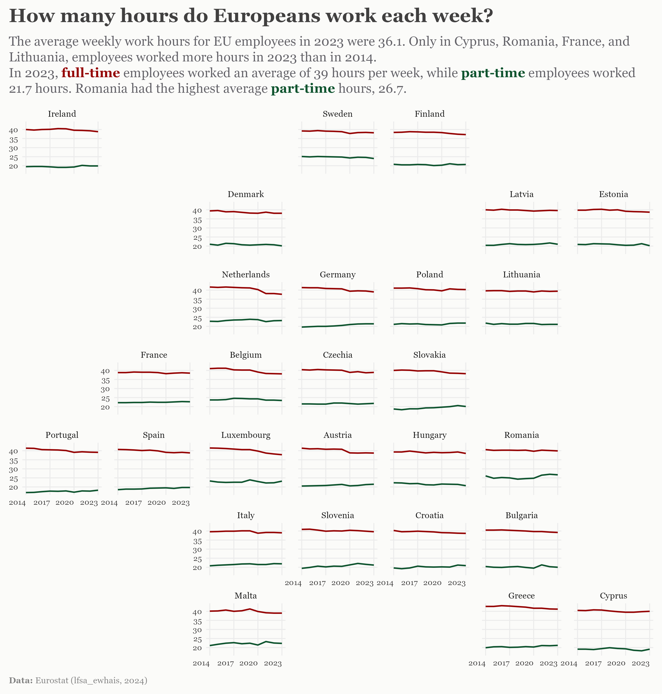

This week’s DataViz is inspired by the RomanianDATA Tribe challenge for September 2024. The data set, sourced from Eurostat, includes information on the average number of actual weekly hours of work in the main job, by sex, age, professional status, full-time/part-time and occupation.
The Visualization
For this challenge, I explored the average working hours of full-time and part-time EU employees aged 20-64 from 2014 to 2023. The visualization uses small multiples plots arranged in a map formation to show EU countries’ average working hours over time.
Show the code
# Load packageslibrary(tidyverse)library(geofacet)library(ggtext)library(grid)windowsFonts(Georgia =windowsFont("Georgia"))# Load datadata_set<-read_csv("working_hours_eu.csv")eu_grid1<-eu_grid1[eu_grid1$name!="United Kingdom", ]eu_grid1$name[eu_grid1$name=="Czech Republic"]<-"Czechia"palette_worktime<-c("Full-time"="#950404B3","Part-time"="#004042B3")# Make the graphtitle<-paste0("How many hours do Europeans work each week?")subtitle<-paste0("Average number of working hours for <span style='color:#950404B3'><b>full-time</b></span> and <span style='color:#004042B3'><b>part-time</b></span>, <br> EU employees aged 20 to 64, 2014–2023.")plot_data<-data_set|>filter(worktime%in%c("Full-time", "Part-time"),sex=="Total")|>select(geo, year, worktime, values)p<-plot_data|>ggplot(aes( x =year, y =values, color =worktime))+geom_line(size =1)+facet_geo(vars(geo), grid ="eu_grid1", scales ="free_y")+scale_color_manual(values =palette_worktime)+labs( x =NULL, y =NULL, title =title, subtitle =subtitle, caption =str_glue("**Data:** Eurostat (lfsa_ewhais, 2024)"))+theme_minimal()+theme(strip.text =element_text(family ="Georgia", size =6.5), axis.text.x =element_text(angle =45, hjust =1), legend.position ="none", panel.grid.major =element_blank(), axis.text =element_text(family ="Georgia", color ="#414040", size =6.5, hjust =0.5), plot.title =element_markdown(color ="#414040", size =20, family ="Georgia", face ="bold", margin =margin(0, 0, 12, 0)), plot.title.position ="plot", plot.subtitle =element_textbox_simple(size =14, vjust =1, margin =margin(0, 0, 12, 0), color ="#646369", family ="Georgia"), plot.caption =element_textbox_simple(color ="#828282" , size =8, hjust =0, family ="Georgia", margin =margin(12, 0,0, 0)), plot.caption.position ="plot", plot.margin =margin(25,30,25,30))# Save the plot with textpng("working_hours_eu.png", height =8.5, width =8, units ="in", res =300)# Draw the plotprint(p)# Add text using grid.text()grid.text("In 2023, \nRomania had the \nhighest average \npart-time hours (26.7) \nand the smallest \nfull-time vs part-time \ndifference (13.2).", x =0.83, y =0.36, just ="left", gp =gpar(col ="#414040", fontsize =8, fontfamily ="Georgia", fontface ="bold"))grid.text("In 2023, \nfull-time employees \nworked an average of \n39 hours per week, while \npart-time employees\nworked 21.7 hours.", x =0.70, y =0.80, just ="left", gp =gpar(col ="#414040", fontsize =8, fontfamily ="Georgia", fontface ="bold"))grid.text("In 2023, \nEU employees averaged \n36.1 weekly hours. \nOnly in Cyprus, Romania, \nFrance, and Lithuania, \nemployees worked more \nhours in 2023 than in 2014.", x =0.07, y =0.19, just ="left", gp =gpar(col ="#414040", fontsize =8, fontfamily ="Georgia", fontface ="bold"))dev.off()
png
2

Tools
This visualization was made using R and the packages:
R Core Team (2023). R: A Language and Environment for Statistical Computing. R Foundation for Statistical Computing, Vienna, Austria. https://www.R-project.org/.↩︎
Source Code
---title: "DataViz 2024-09-16"description: "How many hours do Europeans work each week?"author: "Cozmina Secula"date: "2024-09-16"image: working_hours_eu.pngcode-link: truecode-tools: truecode-fold: truecode-summary: "Show the code"title-block-banner: true---<br>## *How many hours do Europeans work each week?*This week's DataViz is inspired by the [RomanianDATA Tribe](https://www.linkedin.com/company/romaniandata/posts/?feedView=all) challenge for September 2024. The data set, sourced from [Eurostat](https://ec.europa.eu/eurostat/databrowser/product/page/LFSA_EWHAIS), includes information on the average number of actual weekly hours of work in the main job, by sex, age, professional status, full-time/part-time and occupation.## The VisualizationFor this challenge, I explored the average working hours of full-time and part-time EU employees aged 20-64 from 2014 to 2023. The visualization uses small multiples plots arranged in a map formation to show EU countries' average working hours over time.```{r}#| label: DataViz#| warning: false#| message: false# Load packageslibrary(tidyverse)library(geofacet)library(ggtext)library(grid)windowsFonts(Georgia =windowsFont("Georgia"))# Load datadata_set <-read_csv("working_hours_eu.csv")eu_grid1 <- eu_grid1[eu_grid1$name !="United Kingdom", ]eu_grid1$name[eu_grid1$name =="Czech Republic"] <-"Czechia"palette_worktime <-c("Full-time"="#950404B3","Part-time"="#004042B3")# Make the graphtitle <-paste0("How many hours do Europeans work each week?")subtitle <-paste0("Average number of working hours for <span style='color:#950404B3'><b>full-time</b></span> and <span style='color:#004042B3'><b>part-time</b></span>, <br> EU employees aged 20 to 64, 2014–2023.")plot_data <- data_set |>filter(worktime %in%c("Full-time", "Part-time"), sex =="Total") |>select(geo, year, worktime, values)p <- plot_data |>ggplot(aes(x = year,y = values,color = worktime) ) +geom_line(size =1) +facet_geo(vars(geo),grid ="eu_grid1",scales ="free_y") +scale_color_manual(values = palette_worktime) +labs(x =NULL,y =NULL,title = title,subtitle = subtitle, caption =str_glue("**Data:** Eurostat (lfsa_ewhais, 2024)") ) +theme_minimal() +theme(strip.text =element_text(family ="Georgia", size =6.5),axis.text.x =element_text(angle =45, hjust =1),legend.position ="none",panel.grid.major =element_blank(),axis.text =element_text(family ="Georgia",color ="#414040",size =6.5,hjust =0.5),plot.title =element_markdown(color ="#414040", size =20,family ="Georgia",face ="bold",margin =margin(0, 0, 12, 0)),plot.title.position ="plot",plot.subtitle =element_textbox_simple(size =14,vjust =1,margin =margin(0, 0, 12, 0),color ="#646369",family ="Georgia"),plot.caption =element_textbox_simple(color ="#828282" ,size =8, hjust =0,family ="Georgia",margin =margin(12, 0,0, 0)),plot.caption.position ="plot",plot.margin =margin(25,30,25,30) ) # Save the plot with textpng("working_hours_eu.png", height =8.5, width =8, units ="in", res =300)# Draw the plotprint(p)# Add text using grid.text()grid.text("In 2023, \nRomania had the \nhighest average \npart-time hours (26.7) \nand the smallest \nfull-time vs part-time \ndifference (13.2).",x =0.83, y =0.36, just ="left",gp =gpar(col ="#414040",fontsize =8,fontfamily ="Georgia",fontface ="bold"))grid.text("In 2023, \nfull-time employees \nworked an average of \n39 hours per week, while \npart-time employees\nworked 21.7 hours.",x =0.70, y =0.80, just ="left",gp =gpar(col ="#414040",fontsize =8,fontfamily ="Georgia",fontface ="bold"))grid.text("In 2023, \nEU employees averaged \n36.1 weekly hours. \nOnly in Cyprus, Romania, \nFrance, and Lithuania, \nemployees worked more \nhours in 2023 than in 2014.",x =0.07, y =0.19, just ="left",gp =gpar(col ="#414040",fontsize =8,fontfamily ="Georgia",fontface ="bold"))dev.off()```## ToolsThis visualization was made using R and the packages:- **`ggplot2`**[^1] - for creating data visualizations.- **`geofacet`**[^2]- for the creation of geographical faceted plots arranged in spatial grid layouts- **`ggtext`**[^3] - for text formatting in ggplot2- **`grid`**[^4]- for building and arranging graphics in R[^1]: H. Wickham. ggplot2: Elegant Graphics for Data Analysis. Springer-Verlag New York, 2016.[^2]: Hafen R (2023). *geofacet: 'ggplot2' Faceting Utilities for Geographical Data*. R package version 0.2.1, <https://github.com/hafen/geofacet>.[^3]: Wilke C, Wiernik B (2022). *ggtext: Improved Text Rendering Support for 'ggplot2'*. R package version 0.1.2, <https://CRAN.R-project.org/package=ggtext>.[^4]: R Core Team (2023). _R: A Language and Environment for Statistical Computing_. R Foundation for Statistical Computing, Vienna, Austria. <https://www.R-project.org/>.